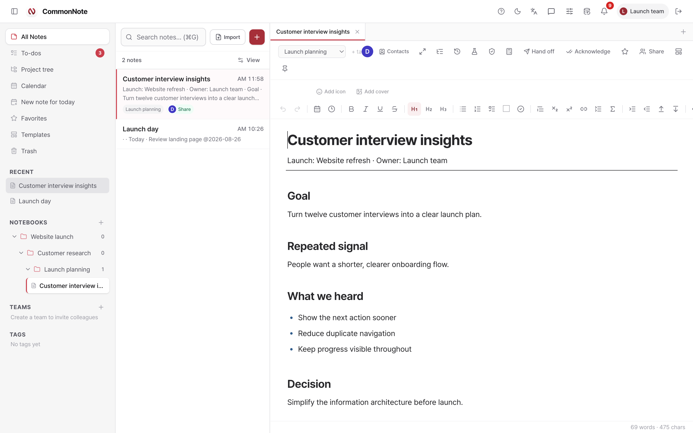
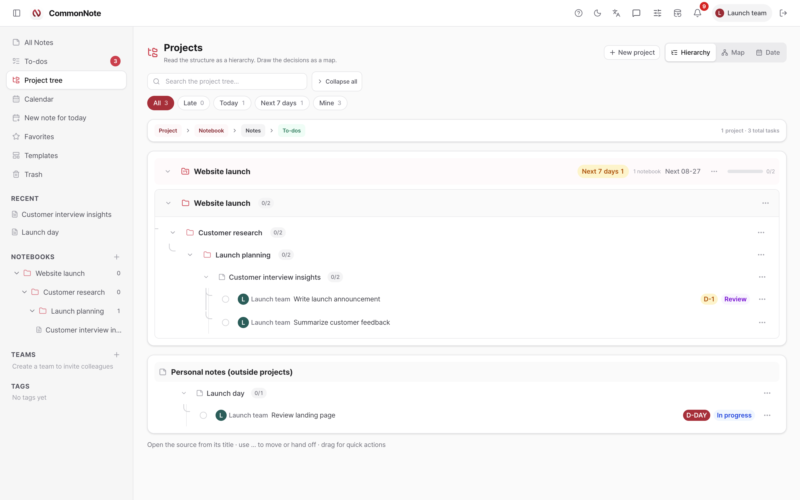
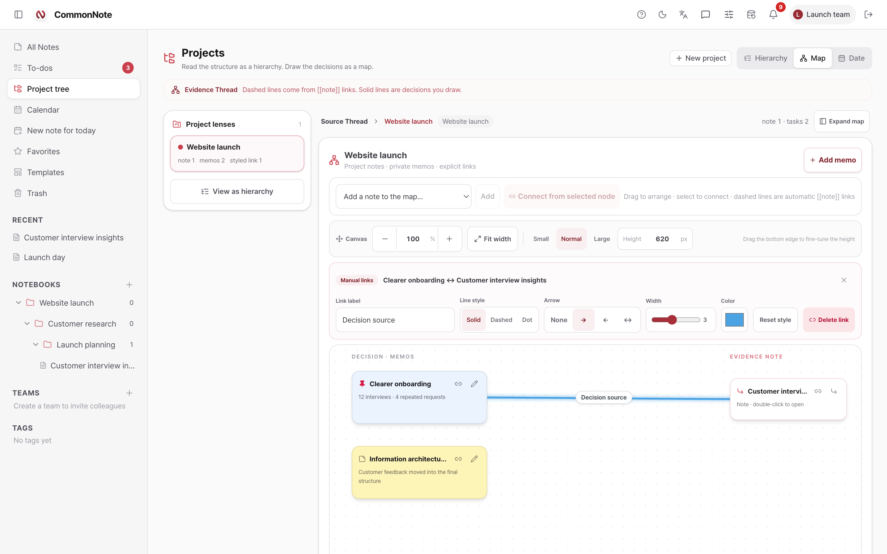
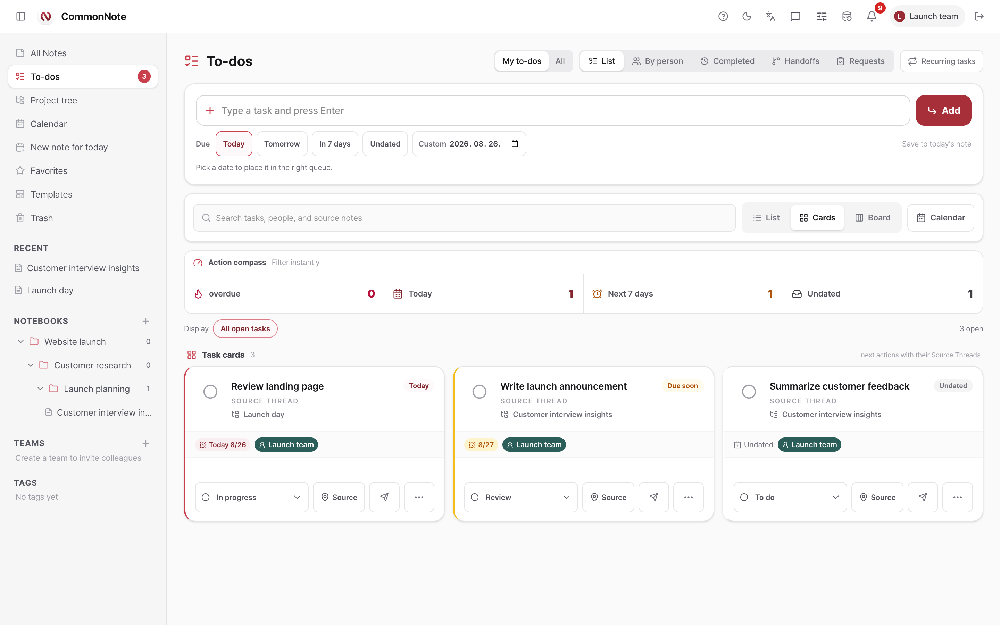
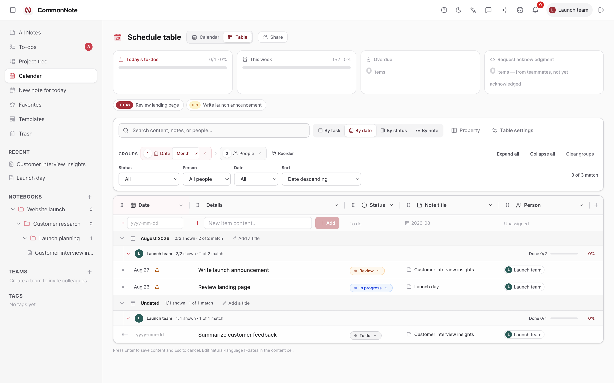
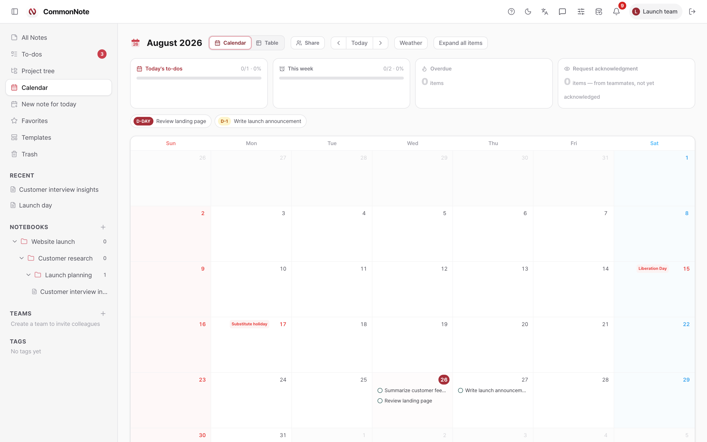
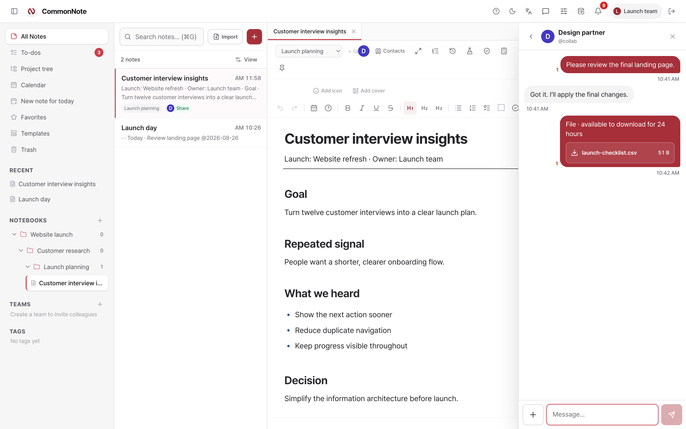
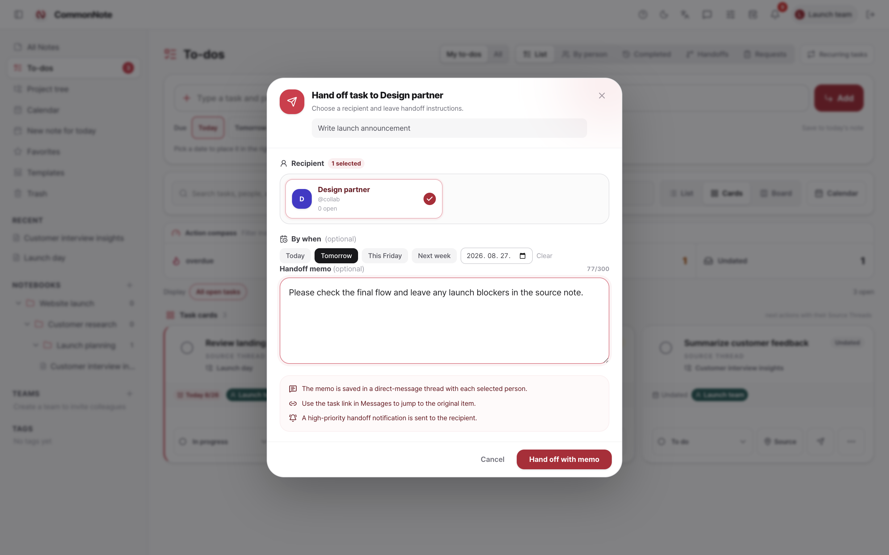
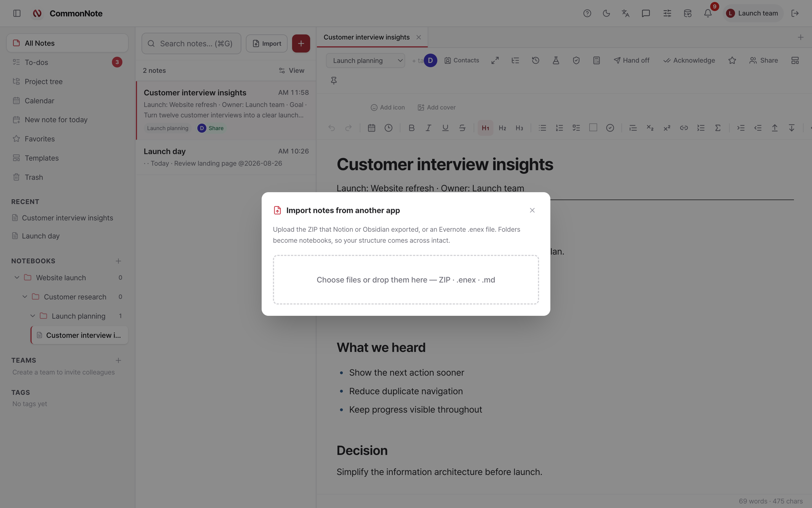

개인
매일의 기록, 계획, 참고 자료와 알림이 서로 끊기지 않습니다.
기록과 실행이 이어지는 워크스페이스
함께 쓰고, 결정은 할 일로 바꾸고, 프로젝트·메시지·파일·일정까지 같은 맥락으로 이어가세요. 다섯 앱에 같은 내용을 다시 옮겨 적지 않아도 됩니다.
실시간 공동 편집 · 설치 없는 웹 앱 · Markdown과 전체 작업 공간 내보내기
새 탭보다, 이어지는 맥락
좋은 노트는 작성이 끝난 뒤 조용해지면 안 됩니다. CommonNote는 일이 다른 모습으로 바뀌어도 이유, 다음 행동, 담당자와 날짜를 원본에 붙여 둡니다.
서로 다른 일, 하나의 작업 공간
매일의 기록, 계획, 참고 자료와 알림이 서로 끊기지 않습니다.
수업 노트, 출처, 복습 과제와 마감일을 탐색 가능한 구조로 정리합니다.
아이디어, 초안, 피드백, 자료와 공개 준비를 최초 생각과 함께 이어갑니다.
공유 노트, 담당, 검토, 인수인계와 납기를 원본에 붙여 관리합니다.
반복 업무, 상태 체계, 구조화 속성, 파일과 책임 기록을 한곳에 둡니다.
방법, Figure, 수식, 버전, 서명과 특화 계산이 필요할 때 깊게 사용합니다.
세부 내용을 쓰고, 원본을 지키세요.
일반 텍스트나 Markdown으로 시작하세요. 일이 요구할 때만 제목, 체크리스트, 표, 파일, Figure, 수식, 색상, 아이콘과 댓글을 더하면 됩니다.

화면은 바꿔도, 맥락은 그대로.
같은 노트와 할 일을 계층, 관계 맵, 업무 카드, 구조화 표 또는 캘린더로 보세요. 모든 화면은 일이 시작된 원본으로 돌아갑니다.

프로젝트 → 노트북 → 노트 → 업무에 완료율, 담당자, 기한, 상태, 필터와 원본 이동이 함께 있습니다.

노트와 개인 메모를 배치하고, 직접 만든 연결에 라벨, 실선·점선, 화살표, 굵기와 색을 설정합니다.

목록·카드·보드에서 Source Thread를 유지하며 담당자, 사용자 상태, 기한, 반복, 전달과 검토를 더합니다.

열을 옮기고 너비를 바꾸며, 다단계 그룹·필터·정렬·계산과 타입 속성을 원본 업무 위에 더합니다.

월간 보기, 기간, D-Day, 오늘·이번 주 진행률, 빠른 추가와 자연어 기한이 같은 일정 데이터를 공유합니다.
메시지가 아니라, 일을 전달하세요.
CommonNote는 대화를 노트와 업무에 연결합니다. 받는 사람이 배경을 다시 조립하지 않고 바로 행동할 수 있습니다.

개인·팀 메시지, 분명한 + 파일 버튼, 파일당 200MB, 업로드 진행률, 다운로드 기록과 24시간 뒤 파일 바이트 자동 정리를 제공합니다.
메신저 설명 →
받는 사람, 기한과 전달 메모를 정하면 고우선순위 알림, 메시지 대화와 원본 업무로 돌아가는 경로가 함께 도착합니다.
업무 전달 설명 →누가 노트에 있는지, 어디를 편집하는지, 각 블록을 누가 썼는지와 버전별 변경을 확인합니다.
기록은 가져오고, 출구는 열어 두세요.
들어올 때 구조를 납작하게 만들지 않고, 나갈 때는 계속 읽을 수 있는 형식으로 제공합니다. 이동 가능성은 해지 절차가 아니라 제품 기능입니다.

필요할 때 깊게, 아닐 때는 조용하게.
각 기능은 전달 한 번, 중복 입력 한 번, 맥락 손실 한 번을 줄이기 위해 있습니다.